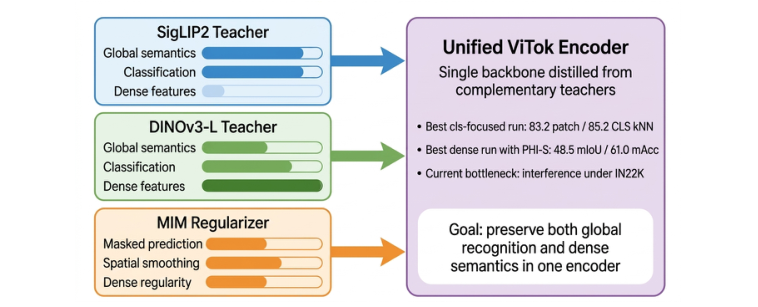

ViTok: Improving Dense Semantics in AM-RADIO-Style Multi-Teacher Distillation with PHI-S and Masked Image Modelling
ARXIV · PREPRINT · 2026 · arXiv:2610.02903 · Preprint first submitted 2026/10/02
Abstract
We study how to consolidate the current VITOK progress into a single multi-teacher distillation recipe that jointly preserves global recognition and dense semantics. Our starting point is an AM-RADIO-style student distilled from SigLIP2 and DINOv3-L, where SigLIP2 supplies strong global semantics and DINOv3-L supplies stronger dense features. The central empirical issue is that the same recipe does not optimize all objectives equally well: changes that improve ImageNet-1K kNN accuracy can still degrade ADE20K segmentation. We summarize a progression of modifications that make this trade-off more explicit and more manageable: split adaptor heads for CLS and patch tokens, asymmetric cosine/MSE losses, initialization from a DINOv3-L checkpoint, teacher reweighting, masked image modeling (MIM), and PHI-S feature balancing. The resulting model reaches 83.2 patch kNN and 85.2 CLS kNN, slightly surpassing the DINOv3-L teacher on ImageNet-1K kNN classification, while PHI-S restores ADE20K performance from 46.5/58.1 to 48.5/61.0 mIoU/mAcc, matching the teacher on this dense benchmark. We also summarize negative results: scaling distillation from ImageNet-1K to ImageNet22K does not consistently help, and naively adding extra teachers such as SAM3 or HOG features introduces interference. Rather than claiming a final recipe, this paper distills the current project state into a compact empirical story and a concrete set of lessons for future iterations.
Overview
Combines SigLIP2 and DINOv3-L teachers with masked image modelling and PHI-S feature balancing to preserve global recognition and dense semantics.

85.2% CLS kNN on ImageNet-1K · 48.5 mIoU on ADE20K
Citation
Hailun Xu; Kanchan Sarkar. (2026). ViTok: Improving Dense Semantics in AM-RADIO-Style Multi-Teacher Distillation with PHI-S and Masked Image Modelling. arXiv preprint 2610.02903. https://arxiv.org/abs/2610.02903
BibTeX for the arXiv version:
@misc{vitok2026,
title = {ViTok: Improving Dense Semantics in AM-RADIO-Style Multi-Teacher Distillation with PHI-S and Masked Image Modelling},
author = {Xu, Hailun and Sarkar, Kanchan},
year = {2026},
url = {https://arxiv.org/abs/2610.02903},
eprint = {2610.02903},
archivePrefix = {arXiv}
}